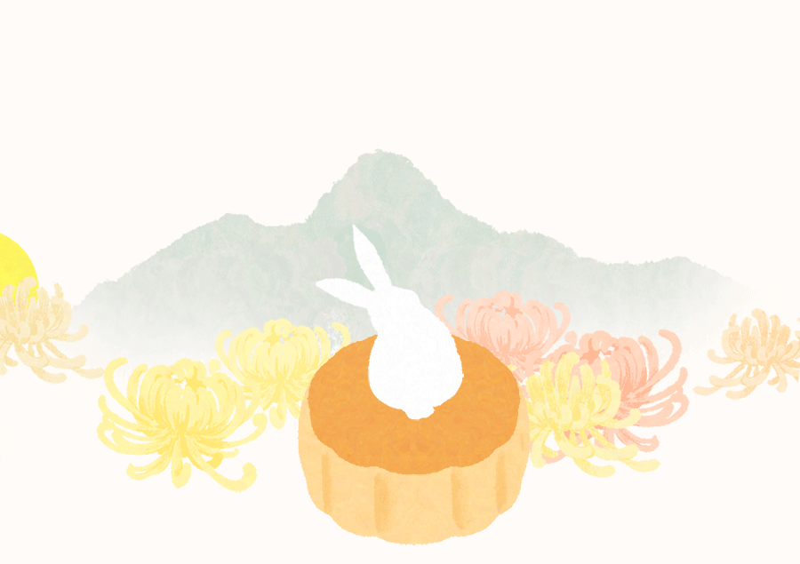

诗词中秋
今 夜 鄜 州 月， 闺 中 只 独 看。
遥 怜 小 儿 女， 未 解 忆 长 安。
香 雾 云 鬟 湿， 清 辉 玉 臂 寒。
何 时 倚 虚 幌， 双 照 泪 痕 干。
《月夜》是唐代大诗人杜甫创作的一首五言律诗，是作者被禁于长安时望月思家之作。此诗借助想象，抒写妻子对自己的思念，也写出自己对妻子的思念。首联想象妻子在鄜州望月思念自己，说透诗人在长安的思亲心情；颔联说儿女随母望月而不理解其母的思念亲人之情，表现诗人想念儿女、体贴妻子之情；颈联写想象中的妻子望月长思，充满悲伤的情绪；尾联寄托希望，以将来相聚共同望月，反衬今日相思之苦。全诗构思新奇，章法紧密，明白如话，情真意切，深婉动人。
明月几时有？把酒问青天。不知天上宫阙，今夕是何年。我欲乘风归去，又恐琼楼玉宇，高处不胜寒。起舞弄清影，何似在人间。
转朱阁，低绮户，照无眠。不应有恨，何事长向别时圆？人有悲欢离合，月有阴晴圆缺，此事古难全。但愿人长久，千里共婵娟。
《水调歌头·明月几时有》是宋朝文学家苏轼创作的一阕词。此词作于宋神宗熙宁九年（1076年）中秋，当时作者在密州（今山东诸城）。词以月起兴，以与其弟苏辙七年未见之情为基础，围绕中秋明月展开想象和思考，把人世间的悲欢离合之情纳入对宇宙人生的哲理性追寻之中，表达了词人对亲人的思念和美好祝愿，也表达了在仕途失意时旷达超脱的胸怀和乐观的景致。

万 里 清 光 不 可 思，添 愁 益 恨 绕 天 涯，
谁 人 陇 外 久 征 戍，何 处 庭 前 新 别 离。
失 宠 故 姬 归 院 夜，没 蕃 老 将 上 楼 时。
照 他 几 许 人 肠 断，玉 兔 银 蟾 远 不 知。
《中秋月》是唐代诗人白居易创作的一首七言律诗。此诗开头便以埋怨的语气落笔，说月光令人费解、难以思议，它所照之处给天下人增添愁恨。然后具体描述月光带来的种种忧思：征人思家，院中离愁，宫中哀怨，战俘怀乡。月光引得种种人断肠落泪，而月亮却浑然不觉，简直是普天下头等傻瓜。全诗构思独特，诗人貌似咏月，实为讽世，手法别致新颖，且不乏幽默风趣。
云 母 屏 风 烛 影 深，长 河 渐 落 晓 星 沉。
嫦 娥 应 悔 偷 灵 药，碧 海 青 天 夜 夜 心。
《嫦娥》是唐代诗人李商隐创作的一首诗。此诗咏叹嫦娥在月中的孤寂情景，抒发诗人自伤之情。前两句分别描写室内、室外的环境，渲染空寂清冷的气氛，表现主人公怀思的情绪；后两句是主人公在一宵痛苦的思忆之后产生的感想，表达了一种孤寂感。全诗情调感伤，意蕴丰富，奇思妙想，真实动人。